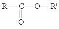
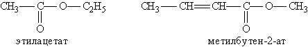

Сложные эфиры
Теория
Среди функциональных производных кислот особое место занимают сложные эфиры – производные кислот, у которых атом водорода в карбоксильной группе заменен углеводородным радикалом.
Общая формула сложных эфиров:

где R и R'– углеводородные радикалы (в сложных эфиpax муравьиной кислоты R – атом водорода).
Названия сложных эфиров производят от названия углеводородного радикала и названия кислоты, в котором вместо окончания –овая используют суффикс –aт, например:

Для сложных эфиров характерны три вида изомерии:
- Изомерия углеродной цепи начинается по кислотному остатку с бутановой кислоты, по спиртовому остатку – с пропилового спирта, например, этилбутирату изомерны этилизобутират, пропилацетат и изопропилацетат.
- Изомерия положения сложноэфирной группировки –СО–О–. Этот вид изомерии начинается со сложных эфиров, в молекулах которых содержится не менее 4 атомов углерода, например этилацетат и метилпропионат.
- Межклассовая изомерия, например, метилацетату изомерна пропановая кислота.
Для сложных эфиров, содержащих непредельную кислоту или непредельный спирт, возможны еще два вида изомерии: изомерия положения кратной связи и цис-, транс-изомерия.
Область применения
В промышленности воски используются как компоненты мазей, кремов, полировочных паст, косметических препаратов, свечей, мыла, для пропитки тканей и кожи.
В пищевой промышленности синтетические и природные воски используются в качестве глазирователей (Е901—903, 908—910)добавок к лимонадам и ситро, которые улучшают вкус и запах.
О целебных свойствах душистых веществ известно с незапамятных времён. Сложилась целая наука о лечении запахами — ароматерапия.
Ароматерапия — это полностью натуральный метод успокоения или устранения многих недугов. Все формы процедур — массаж, ванны, ингаляции — основаны на введении в организм человека высококачественных, чистых, не содержащих химических носителей или добавок эфирных масел. Исцеляющим началом в ароматерапии являются силы природы.
Замечено, что запахи мирта, лимона, мяты оказывают тонизирующее действие на нервную систему, а ароматы розы, жасмина, лаванды — успокаивающее. Ароматические вещества способны снимать усталость, головную боль, нормализовать сон, улучшать деятельность головного мозга.
Душистые вещества применяют в виде смесей, их созданием занимаются специалисты-парфюмеры, так называемые композиторы. В состав современных парфюмерных изделий помимо природных и душистых синтетических веществ входят фиксаторы запаха, этиловый спирт, вода, бальзамы и красители.
Видео
Практика
Допиши реакцию:
- С2Н5ОН + Na →
- CH3COOH +Na2CO3 →
- CH3COOH + OH-CH3 →
Соотнесите:
- Карбоновая кислота
- Альдегид
- Спирт
- Эфир
- С2Н5ОН;
- НСОН;
- СН3-СН2-СООН;
- СН3-СОО-С3Н7;
Лабораторная работа
Content